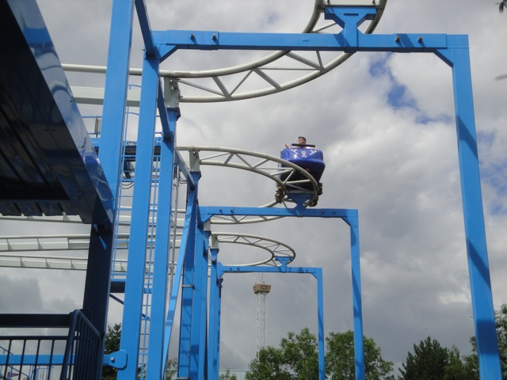
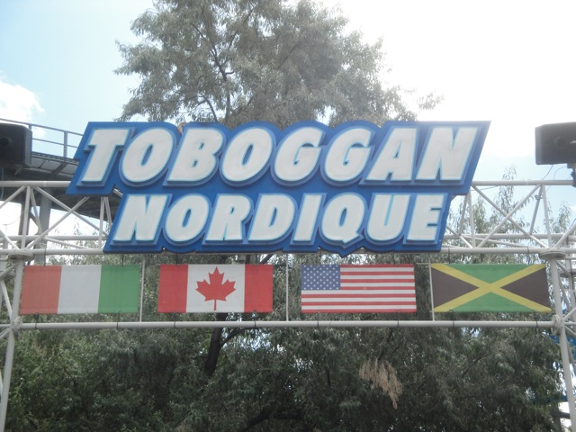
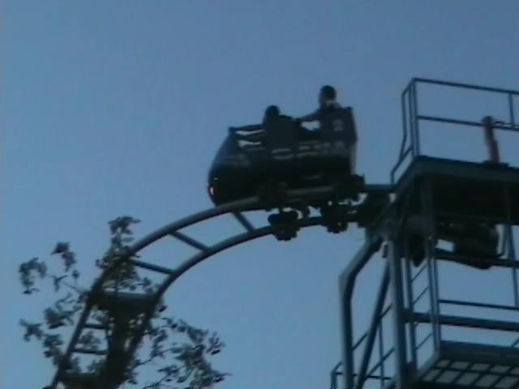

| |
Toboggan Nordique Review

We're here at La Ronde where we'll reveiwing Toboggan Nordique. After getting in the seats and pulling down the lap bar, you go up the lifthill. Up, up, and up you go. Near the top, if you turnaround, you can get a nice shot of the switchbacks as well as a really nice view of La Ronde, which I must admit is a really nice looking park. Then once we get to the top, you get whipped around a turn and set into the switchbacks. The switchbacks are fun because those turns are fun due to the sharp laterals, typical of all Wild Mice. Though by Wild Mouse standards, they are fairly weak, they're still fun and enjoyable. However, after the set of switchbacks, we go through another sharp turn through some straight track, make a quick turn and head down a small drop. The drop is fun and provides us with some speed. We then rise up another small hill before going through another small turn. This isn't fun, this is just painful. Yeah. Not a fun part of the ride. We then go through a quick dip which while it doesn't thrill us, doesn't really do much at all before we go through another sharp turn and go through yet another dip. This leads us to another quick turn into the brake run. Yeah. This mouse sucks. Not only is this one of the worse mouse coasters out there, but it usually has like an hour wait unless you rush in and be the first one in line. So yeah. I'd totally recommend skipping it. But if you're a mega credit whore and can't do so, make sure you head here first, cause keep in mind, this ride is not included in the Flash Pass.
5/10
Location: La Ronde
Opened: 2003
Built by: Zamperla
Last Ridden: August 2, 2011
Toboggan Nordique Photos


Home
|